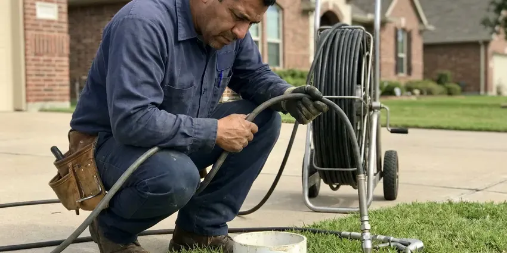

Water Softener Maintenance in Dearborn, MI
Brine tank full of water in Dearborn, MI? Our plumbers clear the injector, test the safety float and reset the valve in a single visit.
- Most Brands Serviced
- Brine Tank Cleanouts
- Fleck and Clack Valve Rebuilds
- Local Plumbers
Book Water Softener Maintenance in Dearborn, MI.
We clean the brine tank, clear the injector and reset regeneration in about an hour.
Annual Water Softener Maintenance for Dearborn, MI Homes
CHV Plumbing works on salt-based ion exchange softeners and salt-free conditioners in Dearborn, MI. Each type has its own weak spots. A salt-based unit usually quits at the injector or the brine tank, while a conditioner mostly needs its prefilter and media changed on schedule.
Work we handle every week:
- Resin rebedding plus iron and chlorine damage checks
- Resin Cleaning and Replacement
- Salt bridge breakup and brine tank cleaning

Additional Plumbing Maintenance Services in Dearborn, MI
Our maintenance and specialty plumbing services in Dearborn, MI protect your home year-round and extend the life of every system.


Customers
Why Choose CHV Plumbing for Water Softener Maintenance in Dearborn, MI?
Small parts clog first. The injector on most residential softeners has an opening barely wider than a pencil lead, and a few grains of sediment are enough to stop brine draw entirely. We pull it, clean it and check the screen on every visit.
- Valve Know-How, We rebuild Fleck, Clack, Pentair and Autotrol valves on site.
- Fewer Breakdowns, Fresh seals and a clean injector head off most valve failures.
- Less Scale, Soft water keeps scale off faucets and showerheads and out of the water heater.
Citywide Coverage
Garage installs, basement setups, utility closets and outdoor units on a slab all get the same service across Dearborn and the surrounding area. Cramped closets just take a bit more time. We bring a small shop vac to clean out the brine tank either way.
Experienced Team
Licensing matters on softener work because the system ties into the potable water supply on one side and the drain system on the other. Our licensed plumbers know where the air gap belongs and how the bypass should tie in. Both get skipped a lot.
Safety-First Approach
Softener drain lines need an air gap where they discharge, so wastewater can never siphon back into the drinking water supply. That gap gets checked every visit. A drain line pushed down into a standpipe or a laundry box gets pulled up and secured before we go.
Trusted Certified Dearborn Plumbing Services Professionals
At CHV Plumbing, we take pride in licensed, certified plumbing services throughout Dearborn, MI. Credentials matter in this trade. Every repair, install and maintenance visit follows strict safety and quality rules, and the plumbers doing the work carry recognized industry credentials.
Call Us Now PHCC Plumbing Contractor Recognition
PHCC Plumbing Contractor Recognition Better Business Bureau (BBB) Accreditation
Better Business Bureau (BBB) Accreditation Angi Certified Pro
Angi Certified Pro ISO 9001 Quality Management Certification
ISO 9001 Quality Management CertificationWater Softener Maintenance Work We Do in Dearborn, MI
Control Valve and Injector Cleaning in Dearborn, MI
Brine draw depends on a venturi injector, a tiny nozzle and throat that pulls brine out of the salt tank as water rushes past. A few specks of grit can stop it cold. We pull the injector and screen, clean them, and replace the seals and spacers on valves like the Fleck 5600 and Clack WS1 if they are worn.

Control Valve Diagnostics and Repair in Dearborn
Leaks at the valve body, water running to drain around the clock, a motor that hums without moving or a display stuck on one cycle usually point to worn seals and spacers. On a Fleck 5600 the fix is a piston and seal kit swap, often done in under an hour without pulling the valve off the tank. Cheaper than a new head.
Softener Maintenance Plans and Pricing in Dearborn, MI
The plan is one flat yearly fee. It covers the service visit and both hardness tests, and parts installed on a plan visit come at a reduced price. For most homes it pays for itself the first time it catches a stuck float.
Breaking Up Salt Bridges in Dearborn
To check for a bridge, we push a broom handle straight down through the salt. A hard stop, then a drop, means a bridge. We break the crust, pull out the mushy salt underneath with a wet-dry vac, then check the brine well, safety float, brine line and grid plate before refilling to about half full.
Brine Tank Cleanout and Inspection in Dearborn, MI
Brine tanks collect a gray sludge of salt fines and insoluble grit, and it builds up faster with cheap rock salt. We empty, scrub and rinse the tank. Then we look for cracks near the overflow elbow and the brine well and refill with fresh salt.
Commercial Twin-Tank Maintenance in Dearborn
Salons, car washes, hotels and restaurants put far more gallons through a softener than any house does, and a hard-water day can mean spotted glassware or a scaled ice machine. Twin-tank and progressive-flow systems need closer checks on the meter and the tank changeover. We service them every one to three months, depending on volume.
Resin Bed Checks and Regeneration Settings in Dearborn
Resin does the actual softening. The beads swap sodium for calcium and magnesium, and once they are loaded up they need brine to recharge. We compare the softened hardness against the gallons used since the last regeneration to see whether the bed still holds its rated capacity.

Service for Most Softener Brands in Dearborn, MI
Culligan, Kinetico, EcoWater, Morton and the store brands all use different valves, and parts for some of them only come through the dealer. Seal kits for the common valves ride on the truck. For a proprietary unit, we tell you up front if a part has to be ordered and how long it usually takes.
Water Softener Maintenance Near Me in Dearborn, MI
Our plumbers work in the Dearborn area every weekday, so a softener call usually gets on the schedule within a day or two. We often have same-day openings. A leaking brine tank or a valve stuck in backwash gets moved up the list.
Being local cuts the wait on a leaking softener from days to hours. Overnight, a split brine tank or a valve stuck draining can flood a garage floor. Turning the bypass handle shuts off the water feeding the unit.
CHV Plumbing at a Glance
- Licensed and insured plumbers serving Dearborn, MI
- 24/7 emergency service with same-day scheduling
- Clear written estimates, no hidden fees
- 4.9-star rated by 670+ Michigan customers
Dearborn Map
Dearborn Information
- Population
- 105,811
- Area codes
- 313/734/248
- Service area
- Dearborn and towns within a 40 mile drive
- Nearby
- Dearborn Heights, Taylor, Detroit, Westland
Most softener trouble in Dearborn, MI comes down to a clogged injector or a salt bridge, and both are cheap to fix compared with descaling a water heater.
Expert Services
Reach out to CHV Plumbing for honest, reliable plumbing from people who know the trade in Dearborn, MI.
Our Specialized Plumbing Services in Dearborn, MI
At CHV Plumbing, we handle the full list of plumbing services across Dearborn, MI. From leak detection to full system installs, our team works fast and charges fair prices on homes and commercial properties alike. Here are the core services we offer:


Our Water Softener Maintenance Steps in Dearborn, MI
We work from the water to the valve, testing first so the fix matches the problem.
Call or Book Online
Call (810) 380-5918 or use the online form, and mention the brand of your softener if you have it. We set a time that fits your day.
On-Site Inspection
A licensed plumber arrives at your Dearborn home and takes hardness readings on both sides of the softener before looking at the tanks and valve.
Cleaning and Adjustment
We clean the brine tank, clear out bridges and salt mush and service the injector, then set regeneration to your test results.
Frequently Asked Questions About Water Softener Maintenance in Dearborn
Most service visits run $100 to $250. At the low end you get the hardness tests and a manual regeneration. A heavily fouled tank or a valve that needs a seal kit pushes the price up, and you get the number before we start.
Maintenance does not lengthen the warranty, but skipping it can void one. Many manufacturers require proof of proper care, including correct salt and setup, before they will cover a failed valve or a cracked tank. Keep the service invoices.
Plan on one to two hours. If the brine tank is clean and the valve is healthy, it runs closer to an hour. A tank packed with salt mush or a valve that needs a full seal and spacer kit pushes it toward two hours, sometimes a little past.
Topping off salt and cleaning out the brine tank are both reasonable DIY jobs. Resin testing and valve diagnosis are a different story. Those need a titration kit and a valve seal tool, plus some practice reading how a regeneration cycle should look.
Our standard visit covers a raw and softened hardness test, a brine tank cleanout, injector and screen cleaning, a valve check and a manual regeneration we watch through every stage. We sanitize the resin tank if the water has an odor or the unit sat unused. The valve seals get a light coat of food-grade silicone grease.
About an hour for a unit in decent shape. Add time for a packed brine tank or a valve rebuild. Surprises do happen, like a cracked distributor tube that shows up as resin beads in the faucet aerators, and those can turn a one-hour call into a second visit.
Evaporated salt pellets are the cleanest option and cause fewer bridges and less sludge than rock salt. Solar salt falls in between. Potassium chloride works if you want to cut sodium, but it softens less per pound, so the salt dose usually has to go up by a quarter or more.
Scale coming back is the giveaway. Dull laundry and dry skin after a shower point the same way. Higher salt use, a brine tank full of water, a grinding noise from the valve head or a drop in water pressure through the house can also mean the softener needs service.
Hear From Customers Who Hired Our Plumbing Experts

James P.
Our restaurant had a slow leak at the hand sink that was rotting the cabinet base. CHV Plumbing came in at six in the morning before prep, replaced the trap and both supply lines, and was packed up before my first cook clocked in.
Commercial Plumbing · Livonia, MI
Jessica T.
We were adding a gas range in a kitchen remodel and needed a new line run from the meter. The plumber pulled the permit, ran the pipe through the crawl space, and had it inspected and approved within the week.
Gas Line Repair · Southfield, MI
Carlos V.
Our house still had galvanized pipe, and upstairs the shower was a trickle. The crew repiped everything in PEX over three days and patched every drywall hole before they left. The pressure difference is night and day.
Repiping · Detroit, MIRobert G.
The camera showed a full break in our clay sewer line near the street. CHV Plumbing replaced it with a trenchless pipe burst, so the only digging was two small pits in the yard. They let us watch the footage before and after.
Sewer Line Replacement · Detroit, MI
Mark T.
The floor drain in our office break room backed up every few weeks. The plumber ran a cable, then put a camera down and found roots at a joint about thirty feet out. Seeing it on the screen made the decision easy.
Drain Cleaning · Westland, MIPaul B.
Our pit pump ran nonstop even in dry weather. The plumber found the check valve was stuck open, so the same water kept cycling back into the pit. New valve, new float switch, done in an hour. It runs quiet now.
Sump Pump · Dearborn, MI